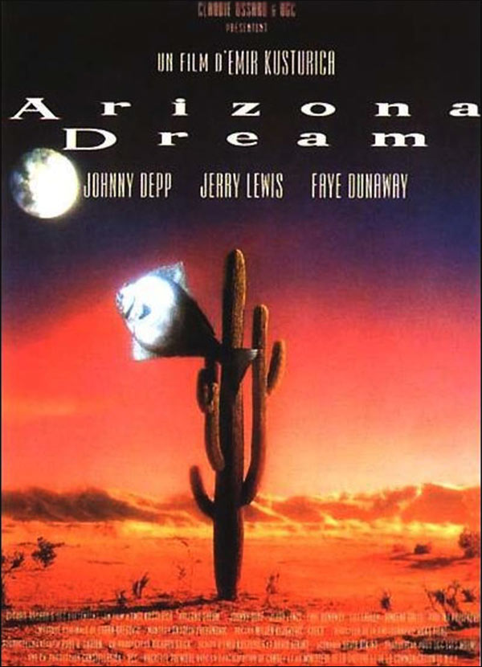
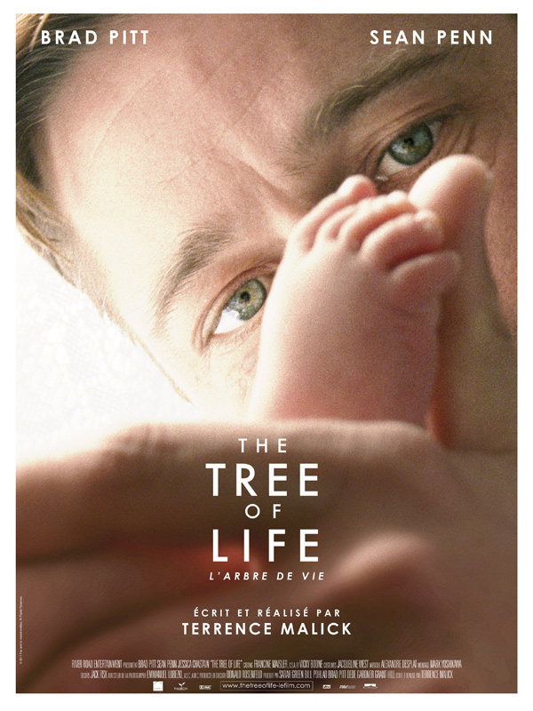
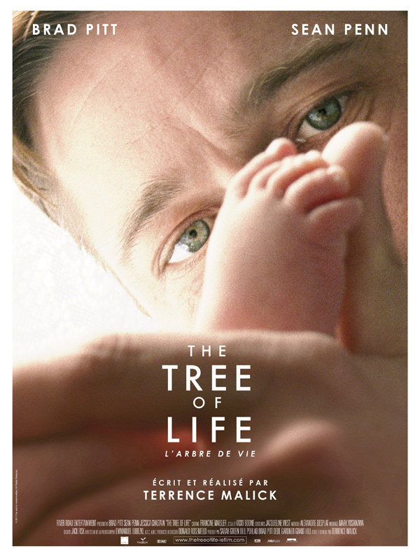

Randomovies
Vous Aimeriez Peut-Être Aussi
 

Le Temps Des Gitans
- Drame
- 1989
- 132 min
Réalisateur : Emir Kusturica
Acteurs : Davor Dujmović, Bora Todorović, Ljubica Adzovic
Synopsis :
Perhan est un rom. Fils d'un soldat slovène et d'une rom, il est élevé ainsi que sa sœur handicapée Danira par sa grand-mère dans un bidonville de Skopje en Yougoslavie (devenue la Macédoine en 1991). La vie de famille s'organise autour d'un accordéon, d'un dindon et d'un oncle déluré. Perhan tombe amoureux d'Azra, la fille de la voisine, mais la mère refuse de donner sa fille en mariage car Perhan est pauvre et n'a pas de situation.
Un jour, Ahmed et un de ses frères viennent dans le bidonville. Ils sont relativement fortunés par rapport aux habitants. La grand-mère guérit le fils d'Ahmed, qui pour la remercier accepte d'emmener Danira dans un hôpital pour qu'elle se fasse soigner. Perhan accompagne sa sœur. Durant le trajet, des enfants sont achetés, et voyagent avec eux. Arrivé à l'hôpital, Ahmed convainc Perhan de ne pas rester auprès de sa sœur, mais de venir avec lui en Italie pour travailler.
Un Autre Film Au Hasard
Recherche
Catégories
- Action
- Comédie
- Drame